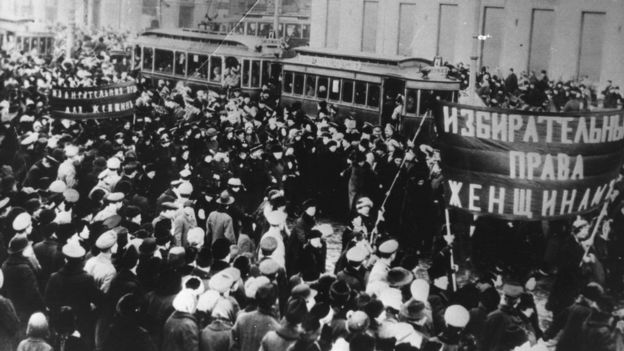
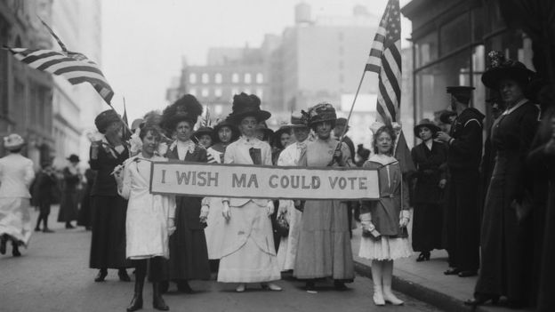

Se fosse possível fazer uma linha do tempo dos primeiros "dias das mulheres" que surgiram no mundo, ela começaria possivelmente com a grande passeata das mulheres em 26 de fevereiro de 1909, em Nova York. Naquele dia, cerca de 15 mil mulheres marcharam nas ruas da cidade por melhores condições de trabalho - na época, as jornadas para elas poderiam chegar a 16h por dia, seis dias por semana e, não raro, incluíam também os domingos. Ali teria sido celebrado pela primeira vez o "Dia Nacional da Mulher" americano. Enquanto isso, também crescia na Europa o movimento nas fábricas.
Em agosto de 1910, a alemã Clara Zetkin propôs em reunião da Segunda Conferência Internacional das Mulheres Socialistas a criação de uma jornada de manifestações. "Não era uma questão de data específica. Ela fez declarações na Internacional Socialista com uma proposta para que houvesse um momento do movimento sindical e socialista dedicado à questão das mulheres", explicou à BBC News Brasil a socióloga Eva Blay, uma das pioneiras nos estudos sobre os direitos das mulheres no país. "A situação da mulher era muito diferente e pior que a dos homens nas questões trabalhistas daquela época", disse ela, que é coordenadora da USP Mulheres.
A proposta de Zetkin, segundo os registros que se tem hoje, era de uma jornada anual de manifestações das mulheres pela igualdade de direitos, sem exatamente determinar uma data. O primeiro dia oficial da mulher seria celebrado, então, em 19 de março de 1911. Em 1917, houve um marco ainda mais forte daquele que viria a ser o 8 de Março. Naquele dia, um grupo de operárias saiu às ruas para se manifestar contra a fome e a Primeira Guerra Mundial, movimento que seria o pontapé inicial da Revolução Russa. O protesto aconteceu em 23 de fevereiro pelo antigo calendário russo - 8 de março no calendário gregoriano, que os soviéticos adotariam em 1918 e é utilizado pela maioria dos países do mundo hoje. Após a revolução bolchevique, a data foi oficializada entre os soviéticos como celebração da "mulher heróica e trabalhadora".
O chamado Dia Internacional da Mulher só foi oficializado em 1975, ano que a ONU intitulou de Ano Internacional da Mulher para lembrar suas conquistas políticas e sociais. "Esse dia tem uma importância histórica porque levantou um problema que não foi resolvido até hoje. A desigualdade de gênero permanece até hoje. As condições de trabalho ainda são piores para as mulheres", pontuou Eva Blay. "Já faz mais de cem anos que isso foi levantado e é bom a gente continuar reclamando, porque os problemas persistem. Historicamente, isso é fundamental."